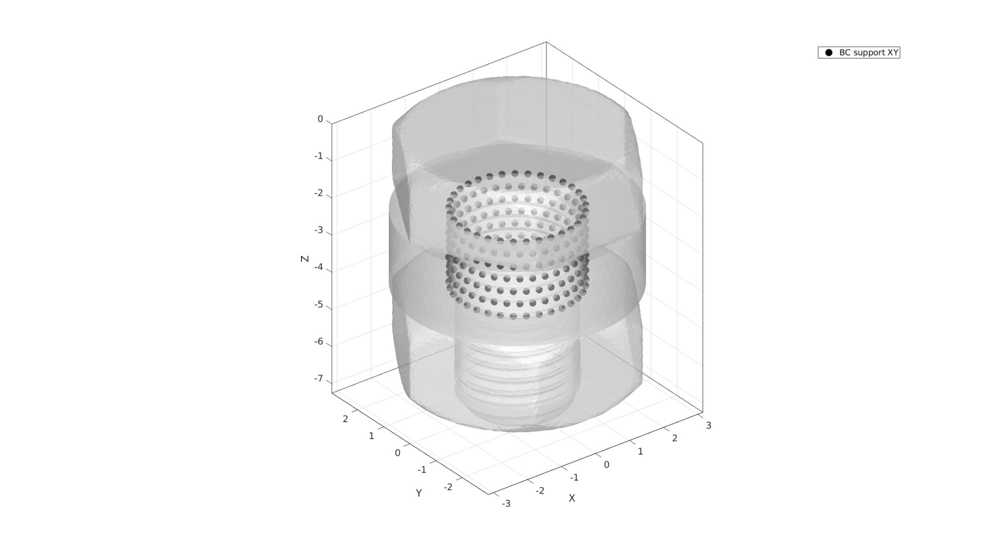
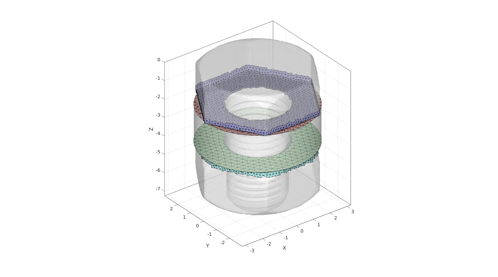

DEMO_febio_0039_nut_bolt_ring
Below is a demonstration for:
- Building geometry for a slab with hexahedral elements, and a triangulated sphere.
- Defining the boundary conditions
- Coding the febio structure
- Running the model
- Importing and visualizing the displacement results
Contents
- Keywords
- Plot settings
- Control parameters
- Import STL file as patch data
- Mesh ring
- Visualizing mesh using meshView, see also anim8
- Join geometries
- Create contact surfaces
- Defining the FEBio input structure
- Quick viewing of the FEBio input file structure
- Exporting the FEBio input file
- Running the FEBio analysis
- Import FEBio results
Keywords
- febio_spec version 3.0
- febio, FEBio
- indentation
- contact, sliding, sticky, friction
- rigid body constraints
- hexahedral elements, hex8
- triangular elements, tri3
- slab, block, rectangular
- sphere
- static, solid
- hyperelastic, Ogden
- displacement logfile
- stress logfile
clear; close all; clc;
Plot settings
fontSize=15; faceAlpha1=0.8; faceAlpha2=0.3; markerSize=40; lineWidth=3; markerSize2=25;
Control parameters
% Path names defaultFolder = fileparts(fileparts(mfilename('fullpath'))); savePath=fullfile(defaultFolder,'data','temp'); stlPath=fullfile(defaultFolder,'data','STL'); % STL files for parts fileName_1=fullfile(stlPath,'M3_nut.stl'); fileName_2=fullfile(stlPath,'M3_bolt.stl'); pointSpacing=0.3; % Defining file names febioFebFileNamePart='tempModel'; febioFebFileName=fullfile(savePath,[febioFebFileNamePart,'.feb']); %FEB file name febioLogFileName=[febioFebFileNamePart,'.txt']; %FEBio log file name febioLogFileName_disp=[febioFebFileNamePart,'_disp_out.txt']; %Log file name for exporting displacement febioLogFileName_strainEnergy=[febioFebFileNamePart,'_energy_out.txt']; %Log file name for exporting strain energy density %Define prescribed rotation prescribedRotation_Z=-(pi/2); prescribedDisplacement_Z=-1; %Material parameters (MPa if spatial units are mm) E_youngs1=17000; %Youngs modulus nu1=0.25; %Poissons ratio materialDensity=1e-9; %Density % FEA control settings numTimeSteps=20; %Number of time steps desired max_refs=35; %Max reforms max_ups=0; %Set to zero to use full-Newton iterations opt_iter=20; %Optimum number of iterations max_retries=5; %Maximum number of retires dtmin=(1/numTimeSteps)/100; %Minimum time step size dtmax=1/numTimeSteps; %Maximum time step size symmetric_stiffness=0; min_residual=1e-20; %Contact parameters contactPenalty=5; laugon=0; minaug=1; maxaug=10; fric_coeff=0.2;
Import STL file as patch data
[stlStruct] = import_STL(fileName_1);
F_nut=stlStruct.solidFaces{1}; %Faces
V_nut=stlStruct.solidVertices{1}; %Vertices
[F_nut,V_nut]=mergeVertices(F_nut,V_nut,3); % Merging nodes
V_nut=V_nut*10; %Scale size
meanV1=mean(V_nut,1);
V_nut=V_nut-meanV1;
% V_nut(:,[1 2])=V_nut(:,[1 2]).*1.01;
V_nut=V_nut+meanV1;
V_nut(:,3)=V_nut(:,3)+4.06;
[stlStruct] = import_STL(fileName_2);
F_bolt=stlStruct.solidFaces{1}; %Faces
V_bolt=stlStruct.solidVertices{1}; %Vertices
[F_bolt,V_bolt]=mergeVertices(F_bolt,V_bolt,3); % Merging nodes
V_bolt=V_bolt*10; %Scale size
optionStruct.pointSpacing=pointSpacing/2; %Set desired pointSpacing
[F_nut,V_nut]=ggremesh(F_nut,V_nut,optionStruct);
[F_bolt,V_bolt]=ggremesh(F_bolt,V_bolt,optionStruct);
%%%%%%%%%%%%%%%%%%%%%%%%%%%%%%%%%%%%%%%%%%%%%%%%%%%%%%%%%%%%%%%%%%%%%%% ------> Geogram/vorpalite for resmeshing <------ 17-Dec-2020 15:30:25 # Export mesh input file. 17-Dec-2020 15:30:25 # Run Geomgram/vorpalite. 17-Dec-2020 15:30:25 ______________________________________________________________________________ | | | o-[config ] Configuration file name:geogram.ini | | Home directory:/root | | o-[I/O ] Output = /mnt/data/MATLAB/GIBBON/data/temp/temp_out.obj | | Loading file /mnt/data/MATLAB/GIBBON/data/temp/temp.obj... | | (FP64) nb_v:1354 nb_e:0 nb_f:2720 nb_b:1 tri:1 dim:3 | | Attributes on vertices: point[3] | | o-[Load ] Elapsed time: 0 s | ___________________________ _/ =====[preprocessing]===== \________________________________________________ | | | o-[CmdLine ] using pre:epsilon=0(0%) | | o-[Validate ] Detected 2 duplicate and 5 degenerate facets | | Detected non-manifold vertices | | (fixed by generating 16 new vertices) | | (FP64) nb_v:1370 nb_e:0 nb_f:2713 nb_b:23 tri:1 dim:3 | | Attributes on vertices: point[3] | | o-[CmdLine ] using pre:min_comp_area=3.4132(3%) | | o-[Components ] Nb connected components=4 | | Removed 3 connected components(9 facets) | | o-[CmdLine ] using pre:epsilon=0(0%) | | o-[Validate ] Removed 3 duplicated vertices | | (FP64) nb_v:1352 nb_e:0 nb_f:2704 nb_b:0 tri:1 dim:3 | | Attributes on vertices: point[3] | | o-[CmdLine ] using pre:max_hole_area=100 | | o-[Validate ] Mesh does not have 0-area facets (good) | | o-[CmdLine ] using pre:margin=0(0%) | | o-[Pre ] Elapsed time: 0 s | _______________________ _/ =====[remeshing]===== \____________________________________________________ | | ||| o-[Newton ] Elapsed time: 0.22s | | o-[Remesh ] Computing RVD... | | o-[Validate ] (FP64) nb_v:5819 nb_e:0 nb_f:11638 nb_b:0 tri:1 dim:3 | | Attributes on vertices: point[3] | | o-[Remesh ] Elapsed time: 0.29 s | ____________________________ _/ =====[postprocessing]===== \_______________________________________________ | | | o-[CmdLine ] using post:min_comp_area=3.21932(3%) | | o-[Components ] Nb connected components=1 | | Mesh does not have small connected component (good) | | o-[CmdLine ] using post:max_hole_area=100 | | using post:max_deg3_dist=0.00872519(0.10000000000000001%) | | o-[Degree3 ] Does not have any degree 3 vertex (good) | | o-[Post ] Elapsed time: 0 s | ____________________ _/ =====[result]===== \_______________________________________________________ | | | o-[FinalMesh ] (FP64) nb_v:5819 nb_e:0 nb_f:11638 nb_b:0 tri:1 dim:3 | | Attributes on vertices: point[3] | | o-[I/O ] Saving file /mnt/data/MATLAB/GIBBON/data/temp/temp_out.obj. | | .. | | o-[Total time ] Elapsed time: 0.81 s | \______________________________________________________________________________/ # Importing remeshed geometry. 17-Dec-2020 15:30:26 # Removing temporary files. 17-Dec-2020 15:30:26 # Done! 17-Dec-2020 15:30:26 %%%%%%%%%%%%%%%%%%%%%%%%%%%%%%%%%%%%%%%%%%%%%%%%%%%%%%%%%%%%%%%%%%%%%%% ------> Geogram/vorpalite for resmeshing <------ 17-Dec-2020 15:30:26 # Export mesh input file. 17-Dec-2020 15:30:26 # Run Geomgram/vorpalite. 17-Dec-2020 15:30:26 ______________________________________________________________________________ | | | o-[config ] Configuration file name:geogram.ini | | Home directory:/root | | o-[I/O ] Output = /mnt/data/MATLAB/GIBBON/data/temp/temp_out.obj | | Loading file /mnt/data/MATLAB/GIBBON/data/temp/temp.obj... | | (FP64) nb_v:2469 nb_e:0 nb_f:4970 nb_b:24 tri:1 dim:3 | | Attributes on vertices: point[3] | | o-[Load ] Elapsed time: 0 s | ___________________________ _/ =====[preprocessing]===== \________________________________________________ | | | o-[CmdLine ] using pre:epsilon=0(0%) | | o-[Validate ] Detected 0 duplicate and 36 degenerate facets | | (FP64) nb_v:2469 nb_e:0 nb_f:4934 nb_b:0 tri:1 dim:3 | | Attributes on vertices: point[3] | | o-[CmdLine ] using pre:min_comp_area=4.61829(3%) | | o-[Components ] Nb connected components=1 | | Mesh does not have small connected component (good) | | o-[CmdLine ] using pre:max_hole_area=100 | | o-[Validate ] Mesh does not have 0-area facets (good) | | o-[CmdLine ] using pre:margin=0(0%) | | o-[Pre ] Elapsed time: 0 s | _______________________ _/ =====[remeshing]===== \____________________________________________________ | | ||| o-[Newton ] Elapsed time: 0.37s | | o-[Remesh ] Computing RVD... | | o-[Validate ] (FP64) nb_v:7848 nb_e:0 nb_f:15692 nb_b:0 tri:1 dim:3 | | Attributes on vertices: point[3] | | o-[Remesh ] Elapsed time: 0.46 s | ____________________________ _/ =====[postprocessing]===== \_______________________________________________ | | | o-[CmdLine ] using post:min_comp_area=4.27901(3%) | | o-[Components ] Nb connected components=1 | | Mesh does not have small connected component (good) | | o-[CmdLine ] using post:max_hole_area=100 | | using post:max_deg3_dist=0.011076(0.10000000000000001%) | | o-[Degree3 ] Does not have any degree 3 vertex (good) | | o-[Post ] Elapsed time: 0 s | ____________________ _/ =====[result]===== \_______________________________________________________ | | | o-[FinalMesh ] (FP64) nb_v:7848 nb_e:0 nb_f:15692 nb_b:0 tri:1 dim:3 | | Attributes on vertices: point[3] | | o-[I/O ] Saving file /mnt/data/MATLAB/GIBBON/data/temp/temp_out.obj. | | .. | | o-[Total time ] Elapsed time: 1.18 s | \______________________________________________________________________________/ # Importing remeshed geometry. 17-Dec-2020 15:30:27 # Removing temporary files. 17-Dec-2020 15:30:28 # Done! 17-Dec-2020 15:30:28
r1=3;
n=round((2*pi*r1)/pointSpacing);
t=linspace(0,2*pi,n);t=t(1:end-1);
x=r1*cos(t);
y=r1*sin(t);
V1c=[x(:) y(:)];
r2=3.2/2;
n=round((2*pi*r2)/pointSpacing);
t=linspace(0,2*pi,n);t=t(1:end-1);
x=r2*cos(t);
y=r2*sin(t);
V2c=[x(:) y(:)];
[F1,V1]=regionTriMesh2D({V1c,V2c},pointSpacing,0,0);
F1=fliplr(F1);
V1(:,3)=0;
V1c(:,3)=0;
V2c(:,3)=0;
F2=F1;
F2=fliplr(F2);
V2=V1;
V2(:,3)=V2(:,3)+2;
V1c2=V1c;
V1c2(:,3)=V1c2(:,3)+2;
V2c2=V2c;
V2c2(:,3)=V2c2(:,3)+2;
cPar.closeLoopOpt=1;
cPar.patchType='tri';
[F3,V3]=polyLoftLinear(V1c,V1c2,cPar);
[F4,V4]=polyLoftLinear(V2c,V2c2,cPar);
F4=fliplr(F4);
[Fw,Vw,Cw]=joinElementSets({F1,F2,F3,F4},{V1,V2,V3,V4});
[Fw,Vw]=mergeVertices(Fw,Vw);
Mesh ring
[V_regions]=getInnerPoint(Fw,Vw); % Define region points V_holes=[]; % Define hole points [regionA]=tetVolMeanEst(Fw,Vw); %Volume for regular tets stringOpt='-pq1.2AaY'; inputStruct.stringOpt=stringOpt; inputStruct.Faces=Fw; inputStruct.Nodes=Vw; inputStruct.holePoints=V_holes; inputStruct.faceBoundaryMarker=Cw; %Face boundary markers inputStruct.regionPoints=V_regions; %region points inputStruct.regionA=regionA*2; inputStruct.minRegionMarker=2; %Minimum region marker % Mesh model using tetrahedral elements using tetGen [meshOutput]=runTetGen(inputStruct); %Run tetGen % Access model element and patch data Fb=fliplr(meshOutput.facesBoundary); V=meshOutput.nodes; Cwb=meshOutput.boundaryMarker; CE=meshOutput.elementMaterialID; E=meshOutput.elements; V(:,3)=V(:,3)+2;
%%%%%%%%%%%%%%%%%%%%%%%%%%%%%%%%%%%%%%%%%%%%% --- TETGEN Tetrahedral meshing --- 17-Dec-2020 15:30:28 %%%%%%%%%%%%%%%%%%%%%%%%%%%%%%%%%%%%%%%%%%%%% --- Writing SMESH file --- 17-Dec-2020 15:30:28 ----> Adding node field ----> Adding facet field ----> Adding holes specification ----> Adding region specification --- Done --- 17-Dec-2020 15:30:28 --- Running TetGen to mesh input boundary--- 17-Dec-2020 15:30:28 Opening /mnt/data/MATLAB/GIBBON/data/temp/temp.smesh. Delaunizing vertices... Delaunay seconds: 0.036393 Creating surface mesh ... Surface mesh seconds: 0.002305 Recovering boundaries... Boundary recovery seconds: 0.003665 Removing exterior tetrahedra ... Spreading region attributes. Exterior tets removal seconds: 0.000849 Recovering Delaunayness... Delaunay recovery seconds: 0.001169 Refining mesh... Refinement seconds: 0.018766 Optimizing mesh... Optimization seconds: 0.001577 Writing /mnt/data/MATLAB/GIBBON/data/temp/temp.1.node. Writing /mnt/data/MATLAB/GIBBON/data/temp/temp.1.ele. Writing /mnt/data/MATLAB/GIBBON/data/temp/temp.1.face. Writing /mnt/data/MATLAB/GIBBON/data/temp/temp.1.edge. Output seconds: 0.023749 Total running seconds: 0.088624 Statistics: Input points: 1091 Input facets: 2182 Input segments: 3273 Input holes: 0 Input regions: 1 Mesh points: 2066 Mesh tetrahedra: 9308 Mesh faces: 19707 Mesh faces on exterior boundary: 2182 Mesh faces on input facets: 2182 Mesh edges on input segments: 3273 Steiner points inside domain: 975 --- Done --- 17-Dec-2020 15:30:28 %%%%%%%%%%%%%%%%%%%%%%%%%%%%%%%%%%%%%%%%%%%%% --- Importing TetGen files --- 17-Dec-2020 15:30:28 --- Done --- 17-Dec-2020 15:30:28
Visualizing mesh using meshView, see also anim8
meshView(meshOutput);

Join geometries
F_nut=F_nut+size(V,1); F_bolt=F_bolt+size(V,1)+size(V_nut,1); V=[V; V_nut; V_bolt];
R=euler2DCM([pi 0 0]); V=V*R;
Visualize
cFigure; hold on; gpatch(F_nut,V,'rw','k',1); gpatch(F_bolt,V,'gw','k',1); gpatch(Fb,V,Cwb,'k',1); colormap(gjet(4)); icolorbar; axisGeom; camlight headlight; drawnow;

bcSupportList=unique(Fb(Cwb==4,:));
Visualize contact surfaces
cFigure; hold on; gpatch(F_nut,V,'w','none',0.5); gpatch(F_bolt,V,'w','none',0.5); gpatch(Fb,V,'w','none',0.5); hl=plotV(V(bcSupportList,:),'k.','MarkerSize',markerSize); legend(hl,{'BC support XY'}); axisGeom; camlight headlight; drawnow;
Create contact surfaces
VF_nut=patchCentre(F_nut,V); VF_bolt=patchCentre(F_bolt,V); F_secondary1=Fb(Cwb==1,:); F_secondary2=Fb(Cwb==2,:); zWasherTop=mean(V(unique(F_secondary1),3)); zWasherBottom=mean(V(unique(F_secondary2),3)); logicBoltBottom=VF_bolt(:,3)>zWasherTop & VF_bolt(:,3)<zWasherTop+pointSpacing; logicBoltBottom=triSurfLogicSharpFix(F_bolt,logicBoltBottom,2); F_primary1=F_bolt(logicBoltBottom,:); logicNutTop=VF_nut(:,3)<zWasherBottom & VF_nut(:,3)>zWasherBottom-pointSpacing; logicNutTop=triSurfLogicSharpFix(F_nut,logicNutTop,2); F_primary2=F_nut(logicNutTop,:);
Visualize contact surfaces
cFigure; hold on; gpatch(F_nut,V,'w','none',0.5); gpatch(F_bolt,V,'w','none',0.5); gpatch(Fb,V,'w','none',0.5); gpatch(F_secondary1,V,'rw','k',1); patchNormPlot(F_secondary1,V); gpatch(F_secondary2,V,'gw','k',1); patchNormPlot(F_secondary2,V); gpatch(F_primary1,V,'bw','k',1); patchNormPlot(F_primary1,V); gpatch(F_primary2,V,'cw','k',1); patchNormPlot(F_primary2,V); axisGeom; camlight headlight; drawnow;
Defining the FEBio input structure
See also febioStructTemplate and febioStruct2xml and the FEBio user manual.
%Get a template with default settings [febio_spec]=febioStructTemplate; %febio_spec version febio_spec.ATTR.version='3.0'; %Module section febio_spec.Module.ATTR.type='solid'; %Control section febio_spec.Control.analysis='STATIC'; febio_spec.Control.time_steps=numTimeSteps; febio_spec.Control.step_size=1/numTimeSteps; febio_spec.Control.solver.max_refs=max_refs; febio_spec.Control.solver.max_ups=max_ups; febio_spec.Control.solver.symmetric_stiffness=symmetric_stiffness; febio_spec.Control.time_stepper.dtmin=dtmin; febio_spec.Control.time_stepper.dtmax=dtmax; febio_spec.Control.time_stepper.max_retries=max_retries; febio_spec.Control.time_stepper.opt_iter=opt_iter; %Material section materialName1='Material1'; febio_spec.Material.material{1}.ATTR.name=materialName1; febio_spec.Material.material{1}.ATTR.type='neo-Hookean'; febio_spec.Material.material{1}.ATTR.id=1; febio_spec.Material.material{1}.E=E_youngs1; febio_spec.Material.material{1}.v=nu1; materialName2='Material2'; febio_spec.Material.material{2}.ATTR.name=materialName2; febio_spec.Material.material{2}.ATTR.type='rigid body'; febio_spec.Material.material{2}.ATTR.id=2; febio_spec.Material.material{2}.density=1e-9; febio_spec.Material.material{2}.center_of_mass=mean(V_nut,1); materialName3='Material3'; febio_spec.Material.material{3}.ATTR.name=materialName3; febio_spec.Material.material{3}.ATTR.type='rigid body'; febio_spec.Material.material{3}.ATTR.id=3; febio_spec.Material.material{3}.density=1e-9; febio_spec.Material.material{3}.center_of_mass=mean(V_bolt,1); %Mesh section % -> Nodes febio_spec.Mesh.Nodes{1}.ATTR.name='nodeSet_all'; %The node set name febio_spec.Mesh.Nodes{1}.node.ATTR.id=(1:size(V,1))'; %The node id's febio_spec.Mesh.Nodes{1}.node.VAL=V; %The nodel coordinates % -> Elements partName1='Part1'; febio_spec.Mesh.Elements{1}.ATTR.name=partName1; %Name of this part febio_spec.Mesh.Elements{1}.ATTR.type='tet4'; %Element type febio_spec.Mesh.Elements{1}.elem.ATTR.id=(1:1:size(E,1))'; %Element id's febio_spec.Mesh.Elements{1}.elem.VAL=E; %The element matrix partName2='Part2'; febio_spec.Mesh.Elements{2}.ATTR.name=partName2; %Name of this part febio_spec.Mesh.Elements{2}.ATTR.type='tri3'; %Element type febio_spec.Mesh.Elements{2}.elem.ATTR.id=size(E,1)+(1:1:size(F_nut,1))'; %Element id's febio_spec.Mesh.Elements{2}.elem.VAL=F_nut; %The element matrix partName3='Part3'; febio_spec.Mesh.Elements{3}.ATTR.name=partName3; %Name of this part febio_spec.Mesh.Elements{3}.ATTR.type='tri3'; %Element type febio_spec.Mesh.Elements{3}.elem.ATTR.id=size(E,1)+size(F_nut,1)+(1:1:size(F_bolt,1))'; %Element id's febio_spec.Mesh.Elements{3}.elem.VAL=F_bolt; %The element matrix % -> NodeSets nodeSetName1='bcSupportList'; febio_spec.Mesh.NodeSet{1}.ATTR.name=nodeSetName1; febio_spec.Mesh.NodeSet{1}.node.ATTR.id=bcSupportList(:); %MeshDomains section febio_spec.MeshDomains.SolidDomain.ATTR.name=partName1; febio_spec.MeshDomains.SolidDomain.ATTR.mat=materialName1; febio_spec.MeshDomains.ShellDomain{1}.ATTR.name=partName2; febio_spec.MeshDomains.ShellDomain{1}.ATTR.mat=materialName2; febio_spec.MeshDomains.ShellDomain{2}.ATTR.name=partName3; febio_spec.MeshDomains.ShellDomain{2}.ATTR.mat=materialName3; % -> Surfaces surfaceName1='contactSurface1'; febio_spec.Mesh.Surface{1}.ATTR.name=surfaceName1; febio_spec.Mesh.Surface{1}.tri3.ATTR.id=(1:1:size(F_primary1,1))'; febio_spec.Mesh.Surface{1}.tri3.VAL=F_primary1; surfaceName2='contactSurface2'; febio_spec.Mesh.Surface{2}.ATTR.name=surfaceName2; febio_spec.Mesh.Surface{2}.tri3.ATTR.id=(1:1:size(F_primary2,1))'; febio_spec.Mesh.Surface{2}.tri3.VAL=F_primary2; surfaceName3='contactSurface3'; febio_spec.Mesh.Surface{3}.ATTR.name=surfaceName3; febio_spec.Mesh.Surface{3}.tri3.ATTR.id=(1:1:size(F_secondary1,1))'; febio_spec.Mesh.Surface{3}.tri3.VAL=F_secondary1; surfaceName4='contactSurface4'; febio_spec.Mesh.Surface{4}.ATTR.name=surfaceName4; febio_spec.Mesh.Surface{4}.tri3.ATTR.id=(1:1:size(F_secondary2,1))'; febio_spec.Mesh.Surface{4}.tri3.VAL=F_secondary2; % -> Surface pairs contactPairName1='Contact1'; febio_spec.Mesh.SurfacePair{1}.ATTR.name=contactPairName1; febio_spec.Mesh.SurfacePair{1}.primary=surfaceName1; febio_spec.Mesh.SurfacePair{1}.secondary=surfaceName3; contactPairName2='Contact2'; febio_spec.Mesh.SurfacePair{2}.ATTR.name=contactPairName2; febio_spec.Mesh.SurfacePair{2}.primary=surfaceName2; febio_spec.Mesh.SurfacePair{2}.secondary=surfaceName4; %Boundary condition section % -> Fix boundary conditions febio_spec.Boundary.bc{1}.ATTR.type='fix'; febio_spec.Boundary.bc{1}.ATTR.node_set=nodeSetName1; febio_spec.Boundary.bc{1}.dofs='x,y'; %Rigid section % -> Prescribed rigid body boundary conditions febio_spec.Rigid.rigid_constraint{1}.ATTR.name='RigidFix_1'; febio_spec.Rigid.rigid_constraint{1}.ATTR.type='fix'; febio_spec.Rigid.rigid_constraint{1}.rb=2; febio_spec.Rigid.rigid_constraint{1}.dofs='Rx,Ry,Rz,Ru,Rv,Rw'; febio_spec.Rigid.rigid_constraint{2}.ATTR.name='RigidFix_1'; febio_spec.Rigid.rigid_constraint{2}.ATTR.type='fix'; febio_spec.Rigid.rigid_constraint{2}.rb=3; febio_spec.Rigid.rigid_constraint{2}.dofs='Rx,Ry,Ru,Rv'; febio_spec.Rigid.rigid_constraint{3}.ATTR.name='RigidPrescribe'; febio_spec.Rigid.rigid_constraint{3}.ATTR.type='prescribe'; febio_spec.Rigid.rigid_constraint{3}.rb=3; febio_spec.Rigid.rigid_constraint{3}.dof='Rz'; febio_spec.Rigid.rigid_constraint{3}.value.ATTR.lc=1; febio_spec.Rigid.rigid_constraint{3}.value.VAL=prescribedDisplacement_Z; febio_spec.Rigid.rigid_constraint{3}.relative=0; febio_spec.Rigid.rigid_constraint{4}.ATTR.name='RigidPrescribe'; febio_spec.Rigid.rigid_constraint{4}.ATTR.type='prescribe'; febio_spec.Rigid.rigid_constraint{4}.rb=3; febio_spec.Rigid.rigid_constraint{4}.dof='Rw'; febio_spec.Rigid.rigid_constraint{4}.value.ATTR.lc=1; febio_spec.Rigid.rigid_constraint{4}.value.VAL=prescribedRotation_Z; febio_spec.Rigid.rigid_constraint{4}.relative=0; %Contact section febio_spec.Contact.contact{1}.ATTR.surface_pair=contactPairName1; febio_spec.Contact.contact{1}.ATTR.type='sliding-elastic'; febio_spec.Contact.contact{1}.two_pass=1; febio_spec.Contact.contact{1}.laugon=laugon; febio_spec.Contact.contact{1}.tolerance=0.2; febio_spec.Contact.contact{1}.gaptol=0; febio_spec.Contact.contact{1}.minaug=minaug; febio_spec.Contact.contact{1}.maxaug=maxaug; febio_spec.Contact.contact{1}.search_tol=0.01; febio_spec.Contact.contact{1}.search_radius=0.1; febio_spec.Contact.contact{1}.symmetric_stiffness=0; febio_spec.Contact.contact{1}.auto_penalty=1; febio_spec.Contact.contact{1}.penalty=contactPenalty; febio_spec.Contact.contact{1}.fric_coeff=fric_coeff; febio_spec.Contact.contact{2}.ATTR.surface_pair=contactPairName2; febio_spec.Contact.contact{2}.ATTR.type='sliding-elastic'; febio_spec.Contact.contact{2}.two_pass=1; febio_spec.Contact.contact{2}.laugon=laugon; febio_spec.Contact.contact{2}.tolerance=0.2; febio_spec.Contact.contact{2}.gaptol=0; febio_spec.Contact.contact{2}.minaug=minaug; febio_spec.Contact.contact{2}.maxaug=maxaug; febio_spec.Contact.contact{2}.search_tol=0.01; febio_spec.Contact.contact{2}.search_radius=0.1; febio_spec.Contact.contact{2}.symmetric_stiffness=0; febio_spec.Contact.contact{2}.auto_penalty=1; febio_spec.Contact.contact{2}.penalty=contactPenalty; febio_spec.Contact.contact{2}.fric_coeff=fric_coeff; %LoadData section % -> load_controller febio_spec.LoadData.load_controller{1}.ATTR.id=1; febio_spec.LoadData.load_controller{1}.ATTR.type='loadcurve'; febio_spec.LoadData.load_controller{1}.interpolate='LINEAR'; febio_spec.LoadData.load_controller{1}.points.point.VAL=[0 0; 1 1]; %Output section % -> log file febio_spec.Output.logfile.ATTR.file=febioLogFileName; febio_spec.Output.logfile.node_data{1}.ATTR.file=febioLogFileName_disp; febio_spec.Output.logfile.node_data{1}.ATTR.data='ux;uy;uz'; febio_spec.Output.logfile.node_data{1}.ATTR.delim=','; febio_spec.Output.logfile.element_data{1}.ATTR.file=febioLogFileName_strainEnergy; febio_spec.Output.logfile.element_data{1}.ATTR.data='sed'; febio_spec.Output.logfile.element_data{1}.ATTR.delim=','; febio_spec.Output.logfile.element_data{1}.ATTR.elem_set=partName1;
Quick viewing of the FEBio input file structure
The febView function can be used to view the xml structure in a MATLAB figure window.
febView(febio_spec); %Viewing the febio file
Exporting the FEBio input file
Exporting the febio_spec structure to an FEBio input file is done using the febioStruct2xml function.
febioStruct2xml(febio_spec,febioFebFileName); %Exporting to file and domNode
Running the FEBio analysis
To run the analysis defined by the created FEBio input file the runMonitorFEBio function is used. The input for this function is a structure defining job settings e.g. the FEBio input file name. The optional output runFlag informs the user if the analysis was run succesfully.
febioAnalysis.run_filename=febioFebFileName; %The input file name febioAnalysis.run_logname=febioLogFileName; %The name for the log file febioAnalysis.disp_on=1; %Display information on the command window febioAnalysis.runMode='external';%'internal'; [runFlag]=runMonitorFEBio(febioAnalysis);%START FEBio NOW!!!!!!!!
%%%%%%%%%%%%%%%%%%%%%%%%%%%%%%%%%%%%%%%%%%%%%%%%%%%%%%%%%%%%%%%%%%%%%%%%%%%
--------> RUNNING/MONITORING FEBIO JOB <-------- 17-Dec-2020 15:30:37
FEBio path: /home/kevin/FEBioStudio/bin/febio3
# Attempt removal of existing log files 17-Dec-2020 15:30:37
* Removal succesful 17-Dec-2020 15:30:37
# Attempt removal of existing .xplt files 17-Dec-2020 15:30:37
* Removal succesful 17-Dec-2020 15:30:37
# Starting FEBio... 17-Dec-2020 15:30:37
Max. total analysis time is: Inf s
* Waiting for log file creation 17-Dec-2020 15:30:37
Max. wait time: 30 s
* Log file found. 17-Dec-2020 15:30:38
# Parsing log file... 17-Dec-2020 15:30:38
number of iterations : 12 17-Dec-2020 15:30:40
number of reformations : 12 17-Dec-2020 15:30:40
------- converged at time : 0.05 17-Dec-2020 15:30:40
number of iterations : 9 17-Dec-2020 15:30:42
number of reformations : 9 17-Dec-2020 15:30:42
------- converged at time : 0.1 17-Dec-2020 15:30:42
number of iterations : 14 17-Dec-2020 15:30:46
number of reformations : 14 17-Dec-2020 15:30:46
------- converged at time : 0.15 17-Dec-2020 15:30:46
number of iterations : 27 17-Dec-2020 15:31:20
number of reformations : 27 17-Dec-2020 15:31:20
------- converged at time : 0.183333 17-Dec-2020 15:31:20
number of iterations : 22 17-Dec-2020 15:31:25
number of reformations : 22 17-Dec-2020 15:31:25
------- converged at time : 0.212092 17-Dec-2020 15:31:25
number of iterations : 21 17-Dec-2020 15:31:30
number of reformations : 21 17-Dec-2020 15:31:30
------- converged at time : 0.239535 17-Dec-2020 15:31:30
number of iterations : 25 17-Dec-2020 15:31:37
number of reformations : 25 17-Dec-2020 15:31:37
------- converged at time : 0.266329 17-Dec-2020 15:31:37
number of iterations : 12 17-Dec-2020 15:31:40
number of reformations : 12 17-Dec-2020 15:31:40
------- converged at time : 0.290347 17-Dec-2020 15:31:40
number of iterations : 17 17-Dec-2020 15:31:44
number of reformations : 17 17-Dec-2020 15:31:44
------- converged at time : 0.319562 17-Dec-2020 15:31:44
number of iterations : 11 17-Dec-2020 15:31:46
number of reformations : 11 17-Dec-2020 15:31:46
------- converged at time : 0.350536 17-Dec-2020 15:31:46
number of iterations : 9 17-Dec-2020 15:31:49
number of reformations : 9 17-Dec-2020 15:31:49
------- converged at time : 0.385315 17-Dec-2020 15:31:49
number of iterations : 9 17-Dec-2020 15:31:51
number of reformations : 9 17-Dec-2020 15:31:51
------- converged at time : 0.423138 17-Dec-2020 15:31:51
number of iterations : 8 17-Dec-2020 15:31:53
number of reformations : 8 17-Dec-2020 15:31:53
------- converged at time : 0.463397 17-Dec-2020 15:31:53
number of iterations : 9 17-Dec-2020 15:31:55
number of reformations : 9 17-Dec-2020 15:31:55
------- converged at time : 0.505604 17-Dec-2020 15:31:55
number of iterations : 9 17-Dec-2020 15:31:57
number of reformations : 9 17-Dec-2020 15:31:57
------- converged at time : 0.54937 17-Dec-2020 15:31:57
number of iterations : 10 17-Dec-2020 15:31:59
number of reformations : 10 17-Dec-2020 15:31:59
------- converged at time : 0.594382 17-Dec-2020 15:31:59
number of iterations : 10 17-Dec-2020 15:32:01
number of reformations : 10 17-Dec-2020 15:32:01
------- converged at time : 0.640392 17-Dec-2020 15:32:01
number of iterations : 9 17-Dec-2020 15:32:03
number of reformations : 9 17-Dec-2020 15:32:03
------- converged at time : 0.6872 17-Dec-2020 15:32:03
number of iterations : 10 17-Dec-2020 15:32:05
number of reformations : 10 17-Dec-2020 15:32:05
------- converged at time : 0.734646 17-Dec-2020 15:32:05
number of iterations : 9 17-Dec-2020 15:32:07
number of reformations : 9 17-Dec-2020 15:32:07
------- converged at time : 0.782603 17-Dec-2020 15:32:07
number of iterations : 10 17-Dec-2020 15:32:10
number of reformations : 10 17-Dec-2020 15:32:10
------- converged at time : 0.830969 17-Dec-2020 15:32:10
number of iterations : 10 17-Dec-2020 15:32:12
number of reformations : 10 17-Dec-2020 15:32:12
------- converged at time : 0.879662 17-Dec-2020 15:32:12
number of iterations : 12 17-Dec-2020 15:32:15
number of reformations : 12 17-Dec-2020 15:32:15
------- converged at time : 0.928616 17-Dec-2020 15:32:15
number of iterations : 10 17-Dec-2020 15:32:17
number of reformations : 10 17-Dec-2020 15:32:17
------- converged at time : 0.977779 17-Dec-2020 15:32:17
number of iterations : 8 17-Dec-2020 15:32:19
number of reformations : 8 17-Dec-2020 15:32:19
------- converged at time : 1 17-Dec-2020 15:32:19
Elapsed time : 0:01:42 17-Dec-2020 15:32:19
N O R M A L T E R M I N A T I O N
# Done 17-Dec-2020 15:32:19
%%%%%%%%%%%%%%%%%%%%%%%%%%%%%%%%%%%%%%%%%%%%%%%%%%%%%%%%%%%%%%%%%%%%%%%%%%%

Import FEBio results
if runFlag==1 %i.e. a succesful run
Importing nodal displacements from a log file
dataStruct=importFEBio_logfile(fullfile(savePath,febioLogFileName_disp),1,1);
%Access data
N_disp_mat=dataStruct.data; %Displacement
timeVec=dataStruct.time; %Time
%Create deformed coordinate set
V_DEF=N_disp_mat+repmat(V,[1 1 size(N_disp_mat,3)]);
Importing element stress from a log file
dataStruct=importFEBio_logfile(fullfile(savePath,febioLogFileName_strainEnergy),1,1);
%Access data
E_energy=dataStruct.data;
Plotting the simulated results using anim8 to visualize and animate deformations
[CV]=faceToVertexMeasure(E,V,E_energy(:,:,end));
% Create basic view and store graphics handle to initiate animation
hf=cFigure; %Open figure
gtitle([febioFebFileNamePart,': Press play to animate']);
title('$\Psi$','Interpreter','Latex')
hp=gpatch(Fb,V_DEF(:,:,end),CV,'k',1); %Add graphics object to animate
hp.Marker='.';
hp.MarkerSize=markerSize2;
hp.FaceColor='interp';
hp2=gpatch([F_nut;F_bolt],V_DEF(:,:,end),'w','none',0.5); %Add graphics object to animate
axisGeom(gca,fontSize);
colormap(gjet(250)); colorbar;
caxis([min(E_energy(:)) max(E_energy(:))]);
axis(axisLim(V_DEF)); %Set axis limits statically
camlight headlight;
% Set up animation features
animStruct.Time=timeVec; %The time vector
for qt=1:1:size(N_disp_mat,3) %Loop over time increments
[CV]=faceToVertexMeasure(E,V,E_energy(:,:,qt));
%Set entries in animation structure
animStruct.Handles{qt}=[hp hp hp2]; %Handles of objects to animate
animStruct.Props{qt}={'Vertices','CData','Vertices'}; %Properties of objects to animate
animStruct.Set{qt}={V_DEF(:,:,qt),CV,V_DEF(:,:,qt)}; %Property values for to set in order to animate
end
anim8(hf,animStruct); %Initiate animation feature
drawnow;

end

GIBBON www.gibboncode.org
Kevin Mattheus Moerman, gibbon.toolbox@gmail.com
GIBBON footer text
License: https://github.com/gibbonCode/GIBBON/blob/master/LICENSE
GIBBON: The Geometry and Image-based Bioengineering add-On. A toolbox for image segmentation, image-based modeling, meshing, and finite element analysis.
Copyright (C) 2006-2020 Kevin Mattheus Moerman
This program is free software: you can redistribute it and/or modify it under the terms of the GNU General Public License as published by the Free Software Foundation, either version 3 of the License, or (at your option) any later version.
This program is distributed in the hope that it will be useful, but WITHOUT ANY WARRANTY; without even the implied warranty of MERCHANTABILITY or FITNESS FOR A PARTICULAR PURPOSE. See the GNU General Public License for more details.
You should have received a copy of the GNU General Public License along with this program. If not, see http://www.gnu.org/licenses/.